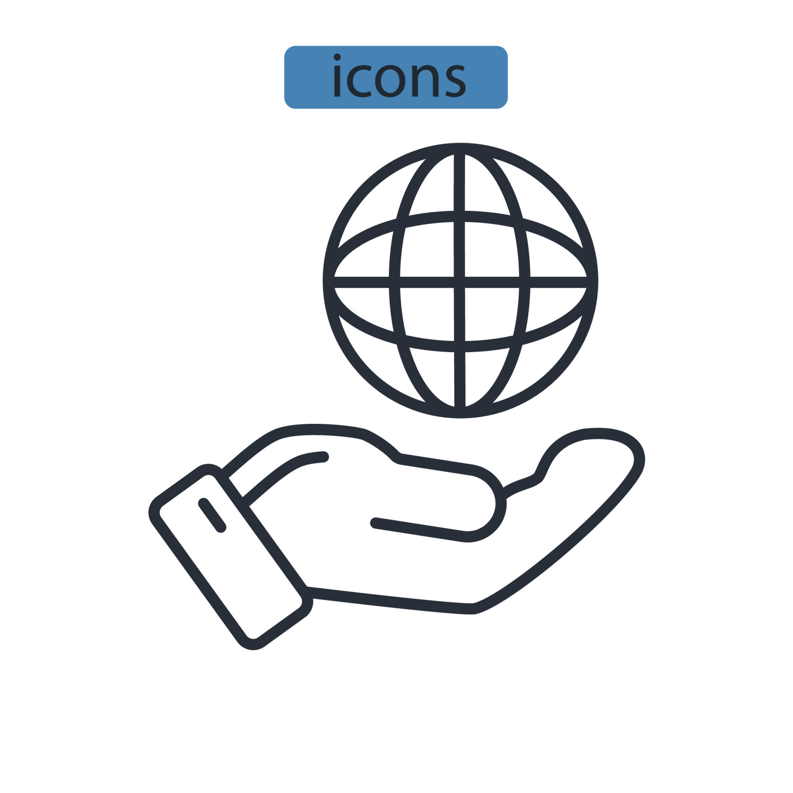

Hur utveckalde man Webben/tekniken
Webben utvecklades på 1990-talet av Tim Berners-Lee, Robert Cailliau och andra på CERN i Schweiz. De skapade HTML, URL och HTTP för att skapa en standard för att dela och hämta information över internet. De första webbsidorna var statiska och innehöll vanligtvis text och bilder. Med tiden utvecklades webben och tekniken för att tillåta interaktivitet, dynamiska webbsidor, webbapplikationer och webbtjänster. Detta skedde tack vare utvecklingen av teknologier som JavaScript, CSS, AJAX och PHP. Med utvecklingen av mobilteknologi och smartphones blev webben allt mer tillgänglig för användare på spridda platser.
Webben fortsätter att utvecklas med nya teknologier som HTML5, WebSockets, WebAssembly och WebVR. Dessa teknologier gör det möjligt för webbsidor och applikationer att erbjuda ökad funktionalitet och bättre användarupplevelse.
Webben fortsatte att utvecklas under 2000-talet med introduktionen av nya teknologier och koncept. Ett av de viktigaste koncepten var web 2.0, som introducerade idén om en mer interaktiv och användardrivna webb. Webbplatser som Facebook, YouTube och Wikipedia är exempel på webbplatser som använder sig av web 2.0-teknologier och erbjuder användare möjlighet att skapa och dela innehåll.
En annan viktig utveckling var utvecklingen av webbtjänster och API:er (Application Programming Interface). Detta gjorde det möjligt för olika program och webbplatser att kommunicera med varandra och dela data, vilket ökade möjligheterna för integration och automatisering.
Med utvecklingen av mobilteknologi och smartphones ökade också efterfrågan på webbsidor och applikationer som är anpassade för mindre skärmar och touchgränssnitt. Detta ledde till utvecklingen av responsiv webbdesign och utvecklingen av mobilanpassade webbsidor och applikationer. Idag arbetar utvecklare och forskare med att skapa en mer semantisk webb, där information på webben är mer lättnavigerad och lättåtkomlig. Teknologier som RDF (Resource Description Framework) och OWL (Web Ontology Language) används för att skapa en mer strukturerad och korrekt beskrivning av information på webben. Således, webben och tekniken har utvecklats och fortsätter att utvecklas för att möta de ökande kraven från användare och företag.